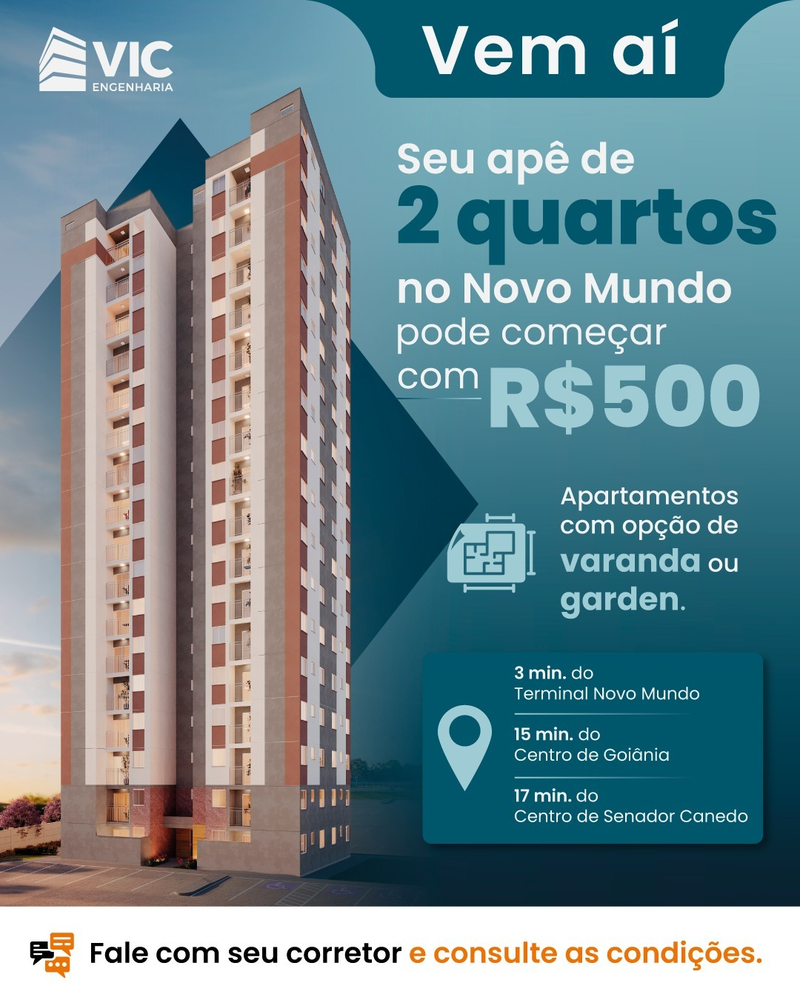
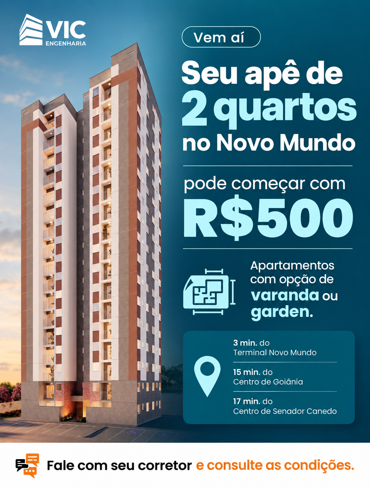

Formato proposto: 4:5. Hipótese: conectar 2 quartos e Novo Mundo melhora a compreensão da oferta.


B exige ajuste de formato e restauração da fachada original antes de publicação. A geração redesenhou detalhes do prédio.
Roteiro completo · Baixar proposta B